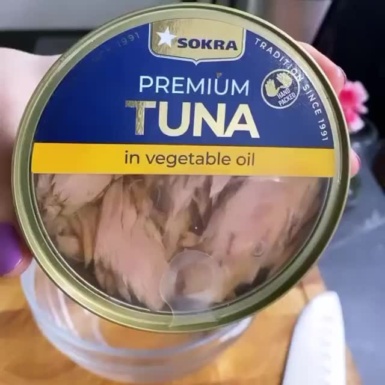

Tuniaková nátierka podľa @sokra_taste_of_the_sea — Normy Jedál
Čo si pripraviť na desiatu? Vyskúšajte rýchlu nátierku so zdravou rybkou. 👌
Budete potrebovať: 1 konzerva tuniaka SOKRA 🐟, polovicu cibuľky 🧅, 1 vajce natvrdo 🥚, 200 g žervé, 1 ČL horčice.
#sokra #sokratasteofthesea #tasteofthesea #baltaxia #pomazanka #fitpomazanka #zdravapomazanka #zdravanatierka #tuniakovanatierka #vajickovanatierka #tunakovapomazanka #zdraverecepty #sokrarecepty